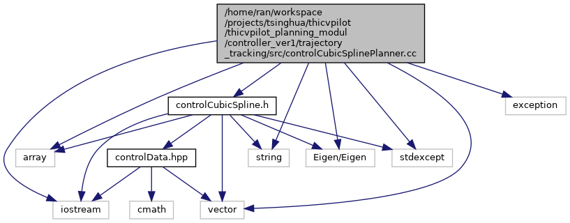

|
My Project
|
处理决策输入的原始轨迹(Traj: x y yaw)，输出插值并具有详细信息的轨迹(Traj: xy yaw v k s). 更多...
#include "controlCubicSpline.h"#include <Eigen/Eigen>#include <array>#include <exception>#include <iostream>#include <stdexcept>#include <string>#include <vector>
命名空间 | |
| Control | |
| Control namespace | |
函数 | |
| Vec_d | Control::vecDiff (Vec_d input) |
| Vec_d | Control::cumSum (Vec_d input) |
| void | Control::calcSplineCourse (Vec_d x, Vec_d y, Vec_d &rX, Vec_d &rY, Vec_d &rYaw, Vec_d &rCurvature, Vec_d &rS, double ds) |
| 样条曲线插值轨迹，并计算相应的切向角度和曲率 更多... | |
| Traj | Control::removeDuplicate (const Traj &trajRaw) |
| Traj | Control::calcSplineWithVCourse (const Traj &trajRaw, double ds) |
| 处理决策输入的原始轨迹(Traj: x y yaw)，输出插值并具有详细信息的轨迹(Traj: xy yaw v k s). 更多... | |
处理决策输入的原始轨迹(Traj: x y yaw)，输出插值并具有详细信息的轨迹(Traj: xy yaw v k s).
1.8.17